Fundição (smelter) · v2 em 3D (r3d)
tools/sprites/r3d.py, o mesmo do
aquecedor, do derretedor e do O₂): volume em 3/4, tampo visível, luz em faixas, sapata B padrão (4 sapatas laranja, friso prata, plaqueta com LED), 40×56 com o mesmo
pé. Mesmas ideias: boca de aço, chaminé, janela da magmatita, LED, bandeja de saída. O funil espetado com pepitas saiu: a entrada de minério agora é
integrada ao corpo, e deixei duas opções (A e B) pro dono escolher. O ícone do lingote de cobre continua o mesmo (aprovado).1 · A máquina (entrada A, a minha preferida)

Entrada A · tremonha integrada. Boca de carga rente ao tampo (aro de aço baixo com lábio laranja e fundo escuro), com minério de ferro e de cobre
a ras da boca e a tampa articulada levantada atrás. Lê "entra minério aqui" sem nenhum acessório colado por cima.
Apagada: boca escura com brasa morta, janela de magmatita apagada, LED apagado. Acesa: massa incandescente pulsando atrás de uma grelha, magmatita acesa na janela,
lingote quente na bandeja, LED verde, calor saindo da chaminé.
2 · Duas opções de entrada pro dono escolher
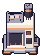
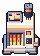
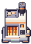
A tira acesa da B é pendentes/anim/anim_machine_smelter_B.png. Só a entrada muda; o resto é igual. Escolhida a opção, descarto a outra.
Ao lado do derretedor e do aquecedor (1×, escala real)
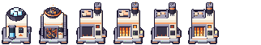
3 · Em cena (superfície e caverna)
Da esquerda pra direita: aquecedor, derretedor, fundição (entrada A). Chão primeiro, máquina ancorada no centro-baixo do tile.
superfície · morto
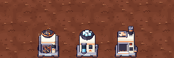
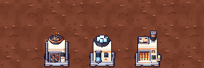
superfície · névoa
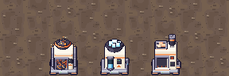
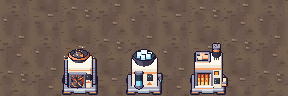
superfície · verde
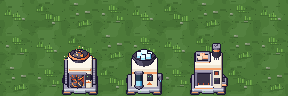
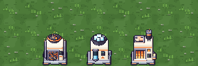
chão da caverna (plateau)
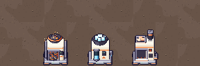
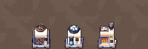
Entrada B em cena
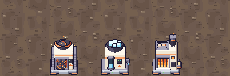
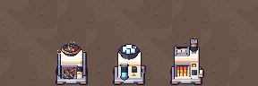
4 · Ícone do lingote de cobre (inalterado)
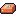
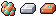
Pro Dev integrar
arquivo (em assets/sprites/ depois do ok) | tamanho | uso |
|---|---|---|
machine_smelter.png | 40×56 | fundição parada (sem energia, sem insumo, submersa), fantasma de colocar, ícone |
anim/anim_machine_smelter.png | 160×56 (4 quadros de 40 px, horizontal) | fundição acesa (fundindo), 5 fps como as outras máquinas (fase por tile, mais devagar no déficit). Quadro 0 = acesa estática |
icon_copper_ingot.png | 16×16 | item copper_ingot |
- Âncora: igual ao aquecedor e ao derretedor nv.1: centrada em x no tile, base da imagem no pé do tile, 40×56. Mesma sapata B; sombra de chão não vai desenhada (como nas outras r3d).
- Convenção:
machine_{key}.pngparada +anim/anim_machine_{key}.pngacesa (sem a tira, usa o parado). Keysmelter. - Os nomes acima são da opção A. Se o dono escolher a B, renomeio
machine_smelter_B.pngeanim_machine_smelter_B.pngpros nomes finais. Arquivos_f*,_Bev1_flat_*são prévia/descartados e não entram. - Alpha só 0/255. Gerador:
python3 tools/sprites/v06_fundo_m3_fundicao.py(determinístico).
v1 (descartada) · só pra comparar
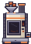
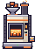